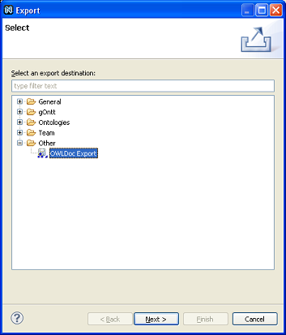
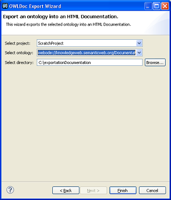

Exporting ontology with OWLDoc
For exporting an ontology with OWLDOc, there are two ways of accessing to the export option:
- From menu File --> Export --> Other Category --> OWLDoc Export
- In the Ontology Navigator, right click, Export --> Other Category --> OWLDoc Export

In the next dialog, you have to select the project that contains the ontology you want to export and the location where the exportation will be made. For ending with the expoprtation process, click "Finish" button.
